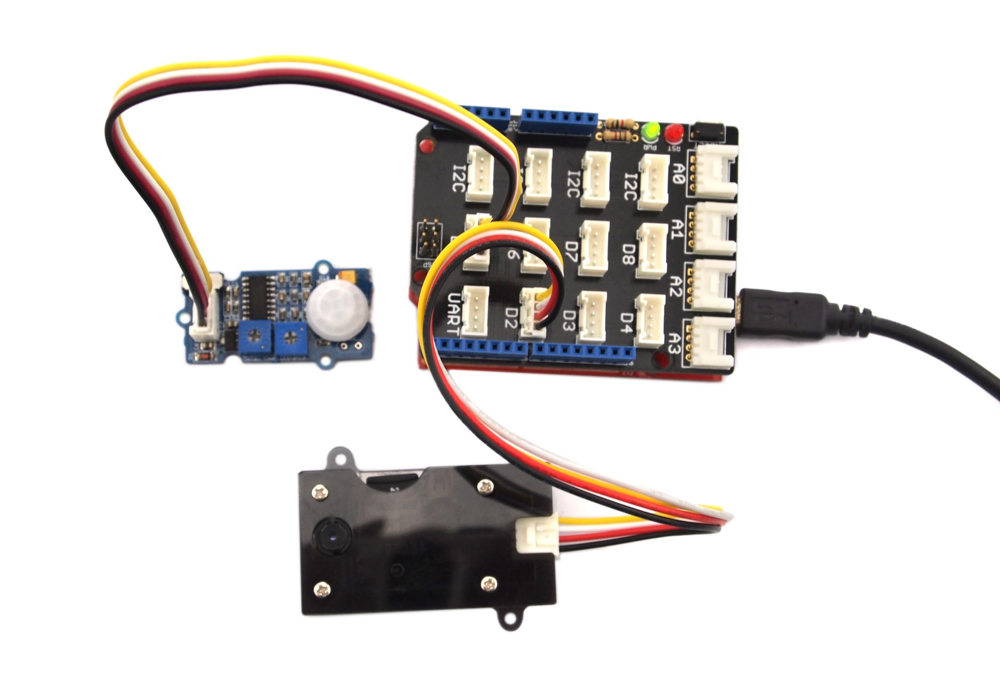

If you are searching a small size camera, perhaps, Grove-Mini Camera would be your best choice. It’s a mini camera which can be controlled by Arduino. It has integrated image processing to generate 1280*720 JPEG image. The captured pictures are stored in SD card and you can read SD card information via Mini 8Pin USB interface.
Model: SEN00300P
| Item | Performance Parameter |
|---|---|
| CPU | ARM9 |
| Video Decode | H.263 Accele |
| Video Format | AVI |
| Video Encode | MPEG4 |
| Video Resolution | 640*480 |
| Video Frame Rate | 30FPS |
| Run Software | support AVI Player |
| Photo Format | JPEG |
| Image Resolution | 1280*720 |
| Charge mode | DC5V |
| Data Communication Interface | Mini 8Pin USB |
| Storage Medium | Micro SD (Max 32G) |
Different from general camera, Grove - Mini Camera can be controlled by Arduino/Seeeduino.
Now let's use the Grove - Mini camera to achieve this function: shoot a picture every time when someone approaches.
To do it, we need a Grove - PIR Motion sensor which can spot any motion within a certain scope.
Let's start to make it:

/*Using digital 2 to control Camera*/
/*Using digital 5 to receive sensor signal*/
#define KEY 2
#define PIR_MOTION_SENSOR 5
void setup()
{
Serial.begin(9600);
pinMode(KEY,OUTPUT);
pinMode(PIR_MOTION_SENSOR,INPUT);
delay(100);
enterStandbyMode();
makeVideo(5000);
}
void loop()
{
int sensorValue = digitalRead(PIR_MOTION_SENSOR);
if(sensorValue == HIGH) //when the sensor value is HIGH, someone is in here
{
takePicture();
delay(5000);
}
}
void takePicture(void)
{
digitalWrite(KEY,HIGH);
delay(1000);
digitalWrite(KEY,LOW);
delay(1000);
}
void enterStandbyMode(void)
{
//set the key pin as high level for 2s,enter the standby state
digitalWrite(KEY,HIGH);
delay(2000);
digitalWrite(KEY,LOW);
delay(1000);
}
void makeVideo(long int videoTime)
{
//set the key pin as high level for 2s again, from the standby state to video state
digitalWrite(KEY,HIGH);
delay(2000);
digitalWrite(KEY,LOW);
delay(videoTime); //make a video for videoTime.Its unit is ms.
// stop the video
digitalWrite(KEY,HIGH);
delay(1000);
digitalWrite(KEY,LOW);
delay(1000);
}
void PoweroffMode(void)
{
//set the key pin as high level for 5s,enter the poweroff state
digitalWrite(KEY,HIGH);
delay(5000);
digitalWrite(KEY,LOW);
delay(1000);
}
Here is the state description of this mini camera. There are 5 working states.
1. Standby： Set key as high level for 2 seconds when in the power off state, Red LED will come on. Mini camera enters Standby state.
2. Power off: Set key as high level for 5 seconds, camera enter Power off state, Red LED will fade out.
3. Take pictures: Set key as high level for about 1000ms when in the power on state, camera can take a picture. Red LED will blink once to tell you that one picture has been taken. Afterwards, it automatically enters standby state.
4. Video: Set key as high level for 2 seconds when in the standby state, Camera will enter video state and red LED blinks continuously. To stop it, set key as high level for about 1000ms, camera will enter to standby state.
5. Files storage: Connect camera to pc using USB cable, you can open image file and VIDEO file. You can also access the files in the SD card by a SD card reader.